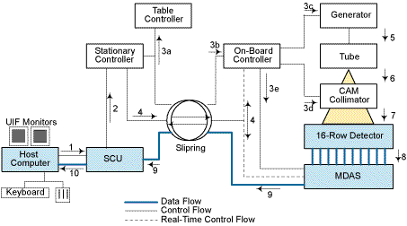

Proprietary to General Electric
Direction 5114043-800, Rev# 9
LightSpeed 3.X Service Methods (Advanced)
Proprietary to General Electric |
Scan Data Acquisition occurs in 4 basic modes of operation, Scout, Axial, Cine, and Helical. In each mode, x-ray is converted to signal in the detector, and the data flow of this data is relatively the same for all 4 modes of operation. The difference is primarily in the reconstruction algorithm and scan parameters.
X-ray signal is absorbed by the detector, transformed into light and finally converted to a small electric current signal for each detector channel for each view. Every analog data samples from the detector is then sent to the DAS via the detector flex leads. The DAS converts each channel of data for every view, for each row of data collected into a amplified analog signal before converting the analog signal into digital data. The system transmits the data from each of the 48 DAS converter boards to the DAS Control Board (DCB), through the RF interface of the slip-ring to the DAS Interface Processor (DIP) board. The data is then saved to disk.
During Cine and Axial scanning modes of operation, the system acquires 4 rows of data in a single rotation. In the Helical mode, data from all 4 detector rows is selectively combined and weighted during reconstruction in order to achieve the optimal balance between image z-axis resolution, noise, and artifacts.
The slice thickness is determined by the ScanRx parameters that are sent to the DCB, and finally to the detector to select the rows or combination of row, via Detector FETs. Refer to the FET set-up minor function theory and description section.
Illustration 1: Behavioral Signal and Process Flow Diagrams

Scan and Recon prescription from operator
Scan Prescription to Stationary Controller
Scan parameters distributed:
table position
rotating parameters
KV and mA selections
x-ray beam collimation and filter selections
Detector slice thickness and DAS gain selections.
Real-time control signals during scanning
High voltage
Un-collimated x-ray beam
Collimated x-ray beam
Analog Scan Data
Digital Scan Data
Patient Images
Table 1: Scan Data Acquisition - Diagnostic/FRU Coverage
| DIAGNOSTIC(S) | DESCRIPTION | FRUS |
|---|---|---|
| Scan Data Path | This test will generate known data either at the MDAS Converter board or DCB Controller Board and send it to the High Speed Data Disk, where the data is checked for errors. | Converter Bd(s) / DCB / RF Transmitter / RF Receiver / DIP Bd. / associated power supplies or interconnect cables. |
| DASTools | Accumulation of DAS scans used to diagnose signal and/or noise problems with the DAS and Detector.Also used to measure DAS power supplies, Converter bd temperature, and Detector temperature. | Detector / Converter Bd(s) / DCB / Elastomer(s) / Cables |
| DIP BLD | DIP Board Level Diagnostic. | DIP |
| dipStats | Program to analyze scan data integrity | DCB / RF Transmitter / RF Receiver / DIP Bd. / associated power supplies or interconnect cables. |
| Diagnostic Data Collection | Manual method of scanning with User selectable parameters. Scan Analysis is used to analyze scan data and to systematically determine problem or next steps. | Dependent on analysis. No direct reported FRU |